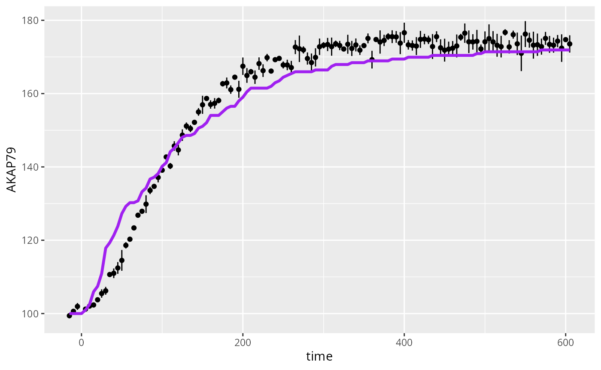
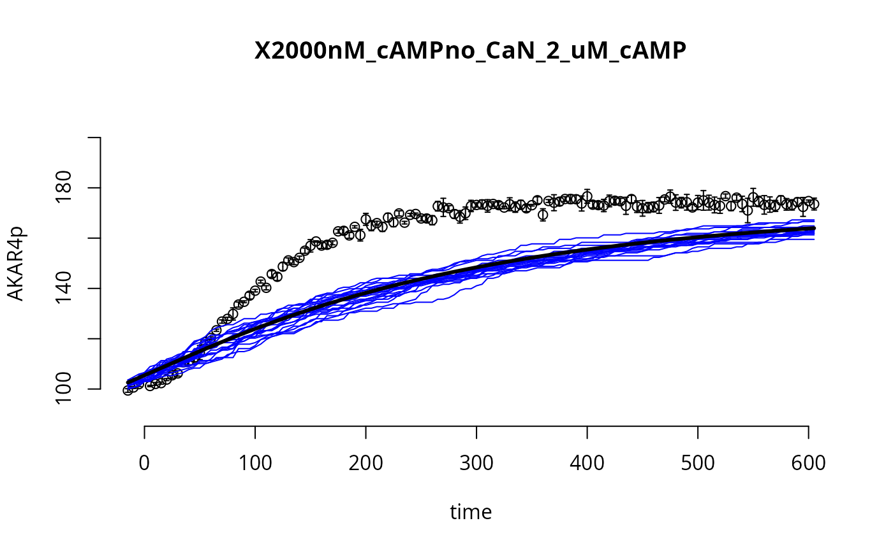

Simulation of a Stochastic Model for the AKAP79 reaction network
simAKAP79stochastic.Rmd
require(SBtabVFGEN)
#> Loading required package: SBtabVFGEN
library(uqsa)
library(GillespieSSA2)This article provides code to simulate the AKAP79 stochastic model (one time, no sampling). We are plotting the model with default parameters which are not expected to fit the data (this is the starting point).
The Stochastic Model
When the copy number of molecular species in a reaction network system (AKAP79 in our case) is low, we cannot model the amount of molecules deterministically (e.g., with an ODE model), because the stochasticity in the reactions that take place cannot be ignored. In particular, the time at which reactions take place is random, as well as the specific reactions that take place (i.e., what pair of molecules react). To model such system we can use the master equation: we model the (integer) number of each molecule species in the system (e.g., proteins) and how the number of each molecule type (randomly) evolves in time. The likelihood of this model is hard to compute; however, we can easily sample trajectories from this stochastic model using the Gillespie algorithm. Given the current amount of each molecular species in the system at a given time point, we can sample the time at which the next reaction takes place and we can sample the type of reaction (i.e., what pair of molecules react).
Load the Model
This model is included with the package. To load your own model, see the user model article.
modelFiles <- uqsa_example("AKAP79",full.names=TRUE)
SBtab <- SBtabVFGEN::sbtab_from_tsv(modelFiles)
#> [tsv] file[1] «AKAP79_Compound.tsv» belongs to Document «AKAP79»
#> I'll take this as the Model Name.
#> AKAP79_Compound.tsv AKAP79_Experiments.tsv AKAP79_Expression.tsv AKAP79_Input.tsv AKAP79_Output.tsv AKAP79_Parameter.tsv AKAP79_Reaction.tsv X0uM_cAMPCaN_AKAP79_0_nM_cAMP.tsv X0uM_cAMPCaN_only_0_nM_cAMP.tsv X0uM_cAMPno_CaN_0_nM_cAMP.tsv X1000nM_cAMPCaN_AKAP79_1_uM_cAMP.tsv X1000nM_cAMPCaN_only_1_uM_cAMP.tsv X1000nM_cAMPno_CaN_1_uM_cAMP.tsv X100nM_cAMPCaN_AKAP79_100_nM_cAMP.tsv X100nM_cAMPCaN_only_100_nM_cAMP.tsv X100nM_cAMPno_CaN_100_nM_cAMP.tsv X2000nM_cAMPCaN_AKAP79_2_uM_cAMP.tsv X2000nM_cAMPCaN_only_2_uM_cAMP.tsv X2000nM_cAMPno_CaN_2_uM_cAMP.tsv X200nM_cAMPCaN_AKAP79_200_nM_cAMP.tsv X200nM_cAMPCaN_only_200_nM_cAMP.tsv X200nM_cAMPno_CaN_200_nM_cAMP.tsv X500nM_cAMPCaN_AKAP79_500_nM_cAMP.tsv X500nM_cAMPCaN_only_500_nM_cAMP.tsv X500nM_cAMPno_CaN_500_nM_cAMP.tsv
modelName <- checkModel("AKAP79",uqsa_example("AKAP79",pat="_gvf[.]c$"))
#> building a shared library from c source, and using GSL odeiv2 as backend (pkg-config is used here).
#> cc -shared -fPIC `pkg-config --cflags gsl` -o './AKAP79.so' '/home/andreikr/.local/R/library/uqsa/extdata/AKAP79/AKAP79_gvf.c' `pkg-config --libs gsl`
comment(modelName)
#> [1] "./AKAP79.so"
# In the terminal run the following:
# ode.sh -R --maxima AKAP79.tar.gz > AKAP79.R
# system2(command = "ode", args = c("-R", "--maxima", "AKAP79.tar.gz"), stdout = "AKAP79.R")
# model related functions, in R, e.g. AKAP79_default() parameters
source(uqsa_example("AKAP79",pat='^AKAP79[.]R$'))
print(AKAP79_default())
#> kf_Rii_C__RiiP_C kf_RiiP_CxcAMP__RiiP_C_cAMP
#> 33.00000 0.49600
#> kf_RiiP_cAMPxC__RiiP_C_cAMP kb_RiiP_cAMPxC__RiiP_C_cAMP
#> 0.00545 0.01560
#> kb_RiiPXcAMP__RiiP_cAMP kf_RiiPXcAMP__RiiP_cAMP
#> 0.00160 0.01500
#> kf_RiiPxC__RiiP_C kb_RiiPxC__RiiP_C
#> 0.03800 0.00260
#> kf_cAMPxRii__Rii_cAMP kb_cAMPxRii__Rii_cAMP
#> 0.01500 0.00160
#> kf_Rii_CxcAMP__Rii_C_cAMP kb_Rii_CxcAMP__Rii_C_cAMP
#> 0.49600 1.41300
#> kf_RiixC__Rii_C kf_Rii_cAMPxC__Rii_C_cAMP
#> 2.10000 0.29840
#> kb_Rii_cAMPxC__Rii_C_cAMP kf_Rii_C_cAMP__RiiP_C_cAMP
#> 0.01800 33.00000
#> kb_RiixC__Rii_C AKAPoff_1
#> 0.00030 2.60000
#> AKAPoff_3 AKAPon_1
#> 20.00000 0.45000
#> AKAPon_3 kf_C_AKAR4
#> 2.00000 0.01800
#> kb_C_AKAR4 kcat_AKARp
#> 0.10600 10.20000
#> kmOFF kmON
#> 100.00000 1.00000
#> KD_T b_AKAP
#> 0.70000 0.00000Load Experiments (data)
experiments <- sbtab.data(SBtab)
# for example, these are the input and initial state of experiment 1:
print(experiments[[1]]$input)
#> [1] 1
print(experiments[[1]]$initialState)
#> Rii cAMP RiiP Rii_C RiiP_cAMP
#> 6.30 0.00 0.00 0.63 0.00
#> RiiP_C RiiP_C_cAMP C Rii_cAMP Rii_C_cAMP
#> 0.00 0.00 0.00 0.00 0.00
#> CaN RiiP_CaN RiiP_cAMP_CaN AKAR4 AKAR4_C
#> 1.50 0.00 0.00 0.20 0.00
#> AKAR4p
#> 0.00
# pick parameters for simulation
nInput <- length(experiments[[1]]$input)Here, we set parameters that we obtained as a result of uncertainty quantification as the default parameters don’t produce a good fit, they are still not optimal:
p <- 10^c(3.38,-0.22,-0.39,0.0013,7.89e-2,-1.02,-1.08,-2.86,-0.53,-0.34,-0.51,-2.42,-1.05,-1.37,-1.29,2.08,-2.79,-0.87,0.26,-0.168,-0.331,-1.77,-0.938,1.065,2.08,0.0147,-0.09893)
names(p) <- rownames(SBtab$Parameter)If instead we wanted to use the default parameters, then we could use this code:
p <- SBtabVFGEN::sbtab_quantity(SBtab$Parameter)Simulate
Function simulator.stoch will output a function
s, which will always simulate the scenarios described in
experiment e (i.e., same initial conditions, same inputs),
but for user supplied parameters.
exp_ind <- 9 #index of the experiment to consider
# generate a function (s) that simulates a trajectory given a parameter in input
ssa2 <- simulator.stoch(experiment = experiments, model.tab = SBtab, vol = 4e-16, outputFunction = AKAP79_func)
# simulate a trajectory (y) given parameter p
y <- ssa2(p)Simulation Results via ggplot2
require(ggplot2)
#> Loading required package: ggplot2
D<-data.frame(time=experiments[[exp_ind]]$outputTime,
AKAP79=experiments[[exp_ind]]$outputValues$AKAR4pOUT,
AKAP79ERR=experiments[[exp_ind]]$errorValues$AKAR4pOUT,
sim=y[[exp_ind]]$output)
ggplot(D) +
geom_linerange(mapping=aes(x=time,y=AKAP79,ymin=AKAP79-AKAP79ERR,ymax=AKAP79+AKAP79ERR),na.rm=TRUE) +
geom_point(mapping=aes(x=time,y=AKAP79),na.rm=TRUE) +
geom_line(mapping=aes(x=time,y=sim),color="purple",lwd=1.2)
Built-in Stochastic simulator
Similarly, our built-in simulator uqsa::simstoch() can
be used to obtain a similar result:
C <- generateGillespieCode(SBtab)
cat(C,sep="\n",file="AKAP79_st.c")We compile that model to a shared library:
And next we simulate this compiled model:
P <- matrix(p,length(p),20)
st <- uqsa::simstoch(experiments,model.so="./akap79-st.so")
ystc <- st(P)And also get a reference simulation from the ODE solver:
sode <- uqsa::simcf(experiments,modelName)
yode <- sode(p)And also plot the results:
tm <- experiments[[exp_ind]]$outputTimes
ov <- experiments[[exp_ind]]$outputValues$AKAR4pOUT
ev <- experiments[[exp_ind]]$errorValues$AKAR4pOUT
par(bty="n")
plot(tm,ov,xlab="time",ylab="AKAR4p",main=names(experiments)[exp_ind],ylim=c(90,210))
arrows(tm,ov,tm,ov+ev,angle=90,length=0.02)
arrows(tm,ov,tm,ov-ev,angle=90,length=0.02)
for (j in seq(NCOL(P))){
lines(tm,as.numeric(ystc[[exp_ind]]$func["AKAR4pOUT",,j]),lwd=1,col="blue")
}
lines(tm,as.numeric(yode[[exp_ind]]$func["AKAR4pOUT",,1]),lwd=3)
Benchmark
Here we test which of the two simulates faster:
if (require(rbenchmark)){
BM <- benchmark(
GillespieSSA2 = {y1<-ssa2(p)},
uqsa = {y2 <- st(p)},
replications=10
)
}
#> Loading required package: rbenchmark
print(BM)
#> test replications elapsed relative user.self sys.self user.child
#> 1 GillespieSSA2 10 262.311 34.374 0.012 0.108 460.643
#> 2 uqsa 10 7.631 1.000 7.626 0.002 0.000
#> sys.child
#> 1 2.809
#> 2 0.000